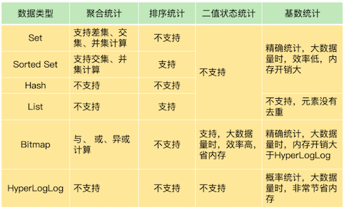

第二节 Redis有那些数据结构适合做统计
在 Web 和移动应用的业务场景中，经常需要保存这样一种信息：一个 key 对应了一个数据集合
- 手机 App 中的每天的用户登录信息：一天对应一系列用户 ID 或移动设备 ID；
- 电商网站上商品的用户评论列表：一个商品对应了一系列的评论；
- 用户在手机 App 上的签到打卡信息：一天对应一系列用户的签到记录；
- 应用网站上的网页访问信息：一个网页对应一系列的访问点击。
Redis 集合类型的特点就是一个键对应一系列的数据，所以非常适合用来存取这些数据。除了记录信息，我们往往还需要对集合中的数据进行统计，例如：
- 在移动应用中，需要统计每天的新增用户数和第二天的留存用户数；
- 在电商网站的商品评论中，需要统计评论列表中的最新评论；
- 在签到打卡中，需要统计一个月内连续打卡的用户数；
- 在网页访问记录中，需要统计独立访客（Unique Visitor，UV）量。
要想选择合适的集合，我们就得了解常用的集合统计模式。集合类型常见的四种统计模式，包括聚合统计、排序统计、二值状态统计和基数统计。
1、聚合统计
所谓的聚合统计，就是指统计多个集合元素的聚合结果，包括：
- 统计多个集合的共有元素（交集统计）；
- 把两个集合相比，统计其中一个集合独有的元素（差集统计）；
- 统计多个集合的所有元素（并集统计）。
统计手机 App 每天的新增用户数和第二天的留存用户数，正好对应了聚合统计。
- 用一个集合记录所有登录过 App 的用户 ID
- 用另一个集合记录每一天登录过 App 的用户 ID。
登录过 App 的用户 ID：
直接使用 Set 类型，把 key 设置为 user:id，表示记录的是用户 ID，
value 就是一个 Set 集合，里面是所有登录过 App 的用户 ID，我们可以把这个 Set 叫作累计用户 Set，

累计用户 Set 中没有日期信息，我们是不能直接统计每天的新增用户的。所以，我们还需要把每一天登录的用户 ID，记录到一个新集合中，我们把这个集合叫作每日用户 Set，它有两个特点：
- key 是 user:id 以及当天日期，例如
user:id:20200803； - value 是 Set 集合，记录当天登录的用户 ID。
在统计每天的新增用户时，我们只用计算每日用户 Set 和累计用户 Set 的差集就行。
假设我们的手机 App 在 2020 年 8 月 3 日上线，那么，8 月 3 日前是没有用户的。
此时，累计用户 Set 是空集，当天登录的用户 ID 会被记录到 key 为 user:id:20200803 的 Set 中。所以，user:id:20200803 这个 Set 中的用户就是当天的新增用户。
然后，我们计算累计用户 Set 和 user:id:20200803 Set 的并集结果，结果保存在 user:id 这个累计用户 Set 中，如下所示：
统计多个集合的所有元素（并集统计）。
SUNIONSTORE user:id user:id user:id:20200803
- 此时，
user:id这个累计用户 Set 中就有了 8 月 3 日的用户 ID。 - 等到 8 月 4 日再统计时，我们把 8 月 4 日登录的用户 ID 记录到 user:id:20200804 的 Set 中
- 接下来，我们执行
SDIFFSTORE命令计算累计用户Set和user:id:20200804 Set的差集，结果保存在 key 为user:new的 Set 中，如下所示：
把两个集合相比，统计其中一个集合独有的元素（差集统计）；
SDIFFSTORE user:new user:id:20200804 user:id
以看到，这个差集中的用户 ID 在 user:id:20200804 的 Set 中存在，但是不在累计用户 Set 中。所以，user:new 这个 Set 中记录的就是 8 月 4 日的新增用户。
当要计算 8 月 4 日的留存用户时，我们只需要再计算 user:id:20200803 和 user:id:20200804 两个 Set 的交集，就可以得到同时在这两个集合中的用户 ID 了，这些就是在 8 月 3 日登录，并且在 8 月 4 日留存的用户。
统计多个集合的共有元素（交集统计）
执行的命令如下：
SINTERSTORE user:id:rem user:id:20200803 user:id:20200804
当你需要对多个集合进行聚合计算时，Set 类型会是一个非常不错的选择
set类型适合做聚合统计：
SUNIONSTORE:并集SDIFFSTORE:差集SINTERSTORE:交集
Set 的差集、并集和交集的计算复杂度较高，在数据量较大的情况下，如果直接执行这些计算，会导致 Redis 实例阻塞
建议：
你可以从主从集群中选择一个从库，让它专门负责聚合计算，或者是把数据读取到客户端，在客户端来完成聚合统计，这样就可以规避阻塞主库实例和其他从库实例的风险了。
2、排序统计
以在电商网站上提供最新评论列表的场景为例应对集合元素排序需求的方法。
最新评论列表包含了所有评论中的最新留言，这就要求集合类型能对元素保序，也就是说，集合中的元素可以按序排列，这种对元素保序的集合类型叫作有序集合。
在 Redis 常用的 4 个集合类型中（List、Hash、Set、Sorted Set），List 和 Sorted Set 就属于有序集合。
List是按照放入的顺序排序，Sorted Set根据元素的权重进行排序。
List 是按照元素进入 List 的顺序进行排序的，而 Sorted Set 可以根据元素的权重来排序，我们可以自己来决定每个元素的权重值。
我们可以根据元素插入 Sorted Set 的时间确定权重值，先插入的元素权重小，后插入的元素权重大。
2-1 List
每个商品对应一个 List，这个 List 包含了对这个商品的所有评论，而且会按照评论时间保存这些评论，每来一个新评论，就用 LPUSH 命令把它插入 List 的队头。
在只有一页评论的时候，我们可以很清晰地看到最新的评论，但是，在实际应用中，网站一般会分页显示最新的评论列表，一旦涉及到分页操作，List 就可能会出现问题了。
假设当前的评论 List 是{A, B, C, D, E, F}（其中，A 是最新的评论，以此类推，F 是最早的评论），在展示第一页的 3 个评论时，我们可以用下面的命令，得到最新的三条评论 A、B、C：
LRANGE product1 0 2
1) "A"
2) "B"
3) "C"
然后，再用下面的命令获取第二页的 3 个评论，也就是 D、E、F。
LRANGE product1 3 5
1) "D"
2) "E"
3) "F"
但是，如果在展示第二页前，又产生了一个新评论 G，评论 G 就会被 LPUSH 命令插入到评论 List 的队头，评论 List 就变成了{G, A, B, C, D, E, F}。
此时，再用刚才的命令获取第二页评论时，就会发现，评论 C 又被展示出来了，也就是 C、D、E。
LRANGE product1 3 5
1) "C"
2) "D"
3) "E"
之所以会这样，关键原因就在于，List 是通过元素在 List 中的位置来排序的，当有一个新元素插入时，原先的元素在 List 中的位置都后移了一位，比如说原来在第 1 位的元素现在排在了第 2 位。所以，对比新元素插入前后，List 相同位置上的元素就会发生变化，用 LRANGE 读取时，就会读到旧元素。
2-2 Sorted Set
和 List 相比，Sorted Set 就不存在这个问题，因为它是根据元素的实际权重来排序和获取数据的。
我们可以按评论时间的先后给每条评论设置一个权重值，然后再把评论保存到 Sorted Set 中。Sorted Set 的 ZRANGEBYSCORE命令就可以按权重排序后返回元素。
这样的话，即使集合中的元素频繁更新，Sorted Set 也能通过 ZRANGEBYSCORE 命令准确地获取到按序排列的数据。
假设越新的评论权重越大，目前最新评论的权重是 N，我们执行下面的命令时，就可以获得最新的 10 条评论：
ZRANGEBYSCORE comments N-9 N
所以，在面对需要展示最新列表、排行榜等场景时，如果数据更新频繁或者需要分页显示，建议你优先考虑使用 Sorted Set。
3、二值状态统计
第三个场景: 用户在手机 App 上的签到打卡信息：一天对应一系列用户的签到记录；
3-1 Bitmap
这里的二值状态就是指集合元素的取值就只有 0 和 1 两种。在签到打卡的场景中，我们只用记录签到（1）或未签到（0），所以它就是非常典型的二值状态
到统计时，每个用户一天的签到用 1 个 bit 位就能表示，一个月（假设是 31 天）的签到情况用 31 个 bit 位就可以，而一年的签到也只需要用 365 个 bit 位，根本不用太复杂的集合类型。这个时候，我们就可以选择 Bitmap。
这是 Redis 提供的扩展数据类型。
Bitmap 本身是用 String 类型作为底层数据结构实现的一种统计二值状态的数据类型。
String 类型是会保存为二进制的字节数组，所以，Redis 就把字节数组的每个 bit 位利用起来，用来表示一个元素的二值状态。你可以把 Bitmap 看作是一个 bit 数组。
- Bitmap 提供了
GETBIT/SETBIT操作，使用一个偏移值 offset 对 bit 数组的某一个 bit 位进行读和写。 - 不过，需要注意的是，Bitmap 的偏移量是从 0 开始算的，也就是说 offset 的最小值是 0。
- 当使用 SETBIT 对一个 bit 位进行写操作时，这个 bit 位会被设置为 1。Bitmap 还提供了 BITCOUNT 操作，用来统计这个 bit 数组中所有“1”的个数。
假设我们要统计 ID 3000 的用户在 2020 年 8 月份的签到情况，就可以按照下面的步骤进行操作。
第一步，执行下面的命令，记录该用户 8 月 3 号已签到。
SETBIT uid:sign:3000:202008 2 1
setbit key offset value
第二步，检查该用户 8 月 3 日是否签到。
GETBIT uid:sign:3000:202008 2
第三步，统计该用户在 8 月份的签到次数。
BITCOUNT uid:sign:3000:202008
第三步，统计该用户在 8 月份的签到次数。
BITCOUNT uid:sign:3000:202008
3-2 BITOP
如果记录了 1 亿个用户 10 天的签到情况，你有办法统计出这 10 天连续签到的用户总数吗？
Bitmap 支持用 BITOP 命令对多个 Bitmap 按位做“与”“或”“异或”的操作，操作的结果会保存到一个新的 Bitmap 中。
我以按位“与”操作为例来具体解释一下。从下图中，可以看到，三个 Bitmap bm1、bm2 和 bm3，对应 bit 位做“与”操作，结果保存到了一个新的 Bitmap 中（示例中，这个结果 Bitmap 的 key 被设为“resmap”）。
在统计 1 亿个用户连续 10 天的签到情况时，你可以把每天的日期作为 key，每个 key 对应一个 1 亿位的 Bitmap，每一个 bit 对应一个用户当天的签到情况。
我们对 10 个 Bitmap 做“与”操作，得到的结果也是一个 Bitmap。在这个 Bitmap 中，只有 10 天都签到的用户对应的 bit 位上的值才会是 1。最后，我们可以用 BITCOUNT 统计下 Bitmap 中的 1 的个数，这就是连续签到 10 天的用户总数了
计算一下记录了 10 天签到情况后的内存开销。
每天使用 1 个 1 亿位的 Bitmap，大约占 12MB的内存（10^8/8/1024/1024），10 天的 Bitmap 的内存开销约为 120MB，内存压力不算太大。
不过，在实际应用时，最好对 Bitmap 设置过期时间，让 Redis 自动删除不再需要的签到记录，以节省内存开销。
所以，如果只需要统计数据的二值状态，例如商品有没有、用户在不在等，就可以使用 Bitmap，因为它只用一个 bit 位就能表示 0 或 1。在记录海量数据时，Bitmap 能够有效地节省内存空间。
4、基数统计
应用网站上的网页访问信息：一个网页对应一系列的访问点击。在网页访问记录中，需要统计独立访客（Unique Visitor，UV）量。
基数统计。基数统计就是指统计一个集合中不重复的元素个数。
4-1 SADD
网页 UV 的统计有个独特的地方，就是需要去重，一个用户一天内的多次访问只能算作一次。在 Redis 的集合类型中，Set 类型默认支持去重，所以看到有去重需求时，我们可能第一时间就会想到用 Set 类型。
有一个用户 user1 访问 page1 时，你把这个信息加到 Set 中：
SADD page1:uv user1
用户 1 再来访问时，Set 的去重功能就保证了不会重复记录用户 1 的访问次数，这样，用户 1 就算是一个独立访客。
当你需要统计 UV 时，可以直接用 SCARD 命令，这个命令会返回一个集合中的元素个数。
但是，如果 page1 非常火爆，UV 达到了千万，这个时候，一个 Set 就要记录千万个用户 ID。
对于一个搞大促的电商网站而言，这样的页面可能有成千上万个，如果每个页面都用这样的一个 Set，就会消耗很大的内存空间。
4-2 Hash => HSET
当然，你也可以用 Hash 类型记录 UV。
例如，你可以把用户 ID 作为 Hash 集合的 key，当用户访问页面时，就用 HSET 命令（用于设置 Hash 集合元素的值），对这个用户 ID 记录一个值“1”，表示一个独立访客，用户 1 访问 page1 后，我们就记录为 1 个独立访客，如下所示：
HSET page1:uv user1 1
- 即使用户 1 多次访问页面，重复执行这个
HSET命令，也只会把 user1 的值设置为 1，仍然只记为 1 个独立访客。 - 当要统计 UV 时，我们可以用
HLEN命令统计 Hash 集合中的所有元素个数。
但是，和 Set 类型相似，当页面很多时，Hash 类型也会消耗很大的内存空间。那么，有什么办法既能完成统计，还能节省内存吗？
就要用到 Redis 提供的 HyperLogLog 了
HyperLogLog 是一种用于统计基数的数据集合类型，它的最大优势就在于，当集合元素数量非常多时，它计算基数所需的空间总是固定的，而且还很小。
在 Redis 中，每个 HyperLogLog 只需要花费 12 KB 内存，就可以计算接近 2^64个元素的基数。
你看，和元素越多就越耗费内存的 Set 和 Hash 类型相比，HyperLogLog 就非常节省空间。
在统计 UV 时，你可以用 PFADD 命令（用于向 HyperLogLog 中添加新元素）把访问页面的每个用户都添加到 HyperLogLog 中。
PFADD page1:uv user1 user2 user3 user4 user5
就可以用 PFCOUNT 命令直接获得 page1 的 UV 值了，这个命令的作用就是返回 HyperLogLog 的统计结果。
PFCOUNT page1:uv
HyperLogLog 的统计规则是基于概率完成的，所以它给出的统计结果是有一定误差的，标准误算率是 0.81%。
这也就意味着，你使用 HyperLogLog 统计的 UV 是 100 万，但实际的 UV 可能是 101 万。虽然误差率不算大，但是，如果你需要精确统计结果的话，最好还是继续用 Set 或 Hash 类型。
5、本节小结

- Set 和 Sorted Set 都支持多种聚合统计，不过，对于差集计算来说，只有 Set 支持。Bitmap 也能做多个 Bitmap 间的聚合计算，包括与、或和异或操作。
- 当需要进行排序统计时，List 中的元素虽然有序，但是一旦有新元素插入，原来的元素在 List 中的位置就会移动，那么，按位置读取的排序结果可能就不准确了。而 Sorted Set 本身是按照集合元素的权重排序，可以准确地按序获取结果，所以建议你优先使用它。
- 记录的数据只有 0 和 1 两个值的状态，Bitmap 会是一个很好的选择，这主要归功于 Bitmap 对于一个数据只用 1 个 bit 记录，可以节省内存。
- 对于基数统计来说，如果集合元素量达到亿级别而且不需要精确统计时，我建议你使用 HyperLogLog。
重点及亮点
- 日常的统计需求可以分为四类：聚合，排序，二值状态，基数，选用适合的数据类型可以实现即快速又节省内存
- 聚合统计，可以选用Set类型完成，但Set的差，并，交集操作复杂度高，在数据量大的时候会阻塞主进程
- 排序统计，可以选用List和Sorted Set
- 二值状态统计：Bitmap本身是用String类型作为底层数据结构实现，String类型会保存为二进制字节数组，所以可以看作是一个bit数组
- 基数统计：HyperLogLog ,计算基数所需空间总是固定的，而且很小。但要注意，HyperLogLog是统计规则是基于概率完成的，不是非常准确
5-2 本节一问
4 种典型的统计模式，以及各种集合类型的支持情况和优缺点